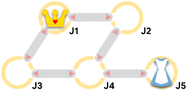
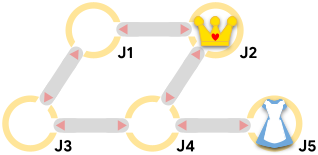
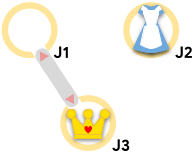

Alice is trapped in Wonderland's labyrinth, being chased by the Queen of Hearts and her herald! The labyrinth is a set of $$$\mathbf{J}$$$ junctions numbered $$$1$$$ through $$$\mathbf{J}$$$, connected by $$$\mathbf{C}$$$ bidirectional corridors.
Alice and the Queen of Hearts take turns making moves, and each knows the location of the other at all times. A move (by either of them) consists of either staying at the current junction or moving to another one that is connected to it by a corridor.
The Queen's herald, however, announces the next move the Queen makes in advance. That means that before anyone makes a move, he announces the Queen's first move. Then, Alice moves first. Then, each time the Queen moves, she must respect the previous announcement, and then decide her next move so the herald can announce it. Alice hears the announcements, so she always knows the Queen's next move before making her own.

If Alice and the Queen are at the same junction after either of them moves, then Alice is caught. Otherwise, the pursuit continues. After $$$10^9$$$ total moves (half of them for Alice and half for the Queen), if Alice and the Queen are not in the same junction, then the Queen will give up and Alice will be safe.
Alice chooses her moves optimally to escape. If she cannot escape, she chooses her moves to maximize the total number of moves until she is caught. The Queen chooses her moves optimally to try to catch Alice in as few total moves as possible.
Given the labyrinth's layout and the initial locations of both the Queen and Alice, find out whether Alice will be caught by the Queen and, if so, in how many moves.
The first line of the input gives the number of test cases, $$$\mathbf{T}$$$. $$$\mathbf{T}$$$ test cases follow. Each test case starts with a line containing four integers $$$\mathbf{J}$$$, $$$\mathbf{C}$$$, $$$\mathbf{A}$$$, and $$$\mathbf{Q}$$$: the number of junctions, the number of corridors, the junction where Alice starts, and the junction where the Queen starts, respectively. Then, $$$\mathbf{C}$$$ lines follow. The $$$i$$$-th of these lines contains two integers $$$\mathbf{U_i}$$$ and $$$\mathbf{V_i}$$$, indicating that the $$$i$$$-th corridor bidirectionally connects junctions $$$\mathbf{U_i}$$$ and $$$\mathbf{V_i}$$$.
For each test case, output one line containing Case #$$$x$$$: $$$y$$$,
where $$$x$$$ is the test case number (starting from 1) and $$$y$$$ is SAFE
if Alice can avoid being caught for $$$10^9$$$ total moves. Otherwise, $$$y$$$ is the total number of
moves (including Alice's and the Queen's) that it takes for the Queen to catch Alice.
Memory limit: 1 GB.
$$$1 \le \mathbf{T} \le 100$$$.
$$$1 \le \mathbf{A} \le \mathbf{J}$$$.
$$$1 \le \mathbf{Q} \le \mathbf{J}$$$.
$$$\mathbf{A} \ne \mathbf{Q}$$$.
$$$1 \le \mathbf{U_i} \lt \mathbf{V_i} \le \mathbf{J}$$$, for all $$$i$$$.
$$$(\mathbf{U_i}, \mathbf{V_i}) \ne (\mathbf{U_j}, \mathbf{V_j})$$$, for all $$$i \ne j$$$.
Time limit: 10 seconds.
$$$2 \le \mathbf{J} \le 30$$$.
$$$1 \le \mathbf{C} \le 60$$$.
Time limit: 60 seconds.
$$$2 \le \mathbf{J} \le 10^5$$$.
$$$1 \le \mathbf{C} \le 2 \times 10^5$$$.
4 5 5 5 1 1 2 1 3 2 4 3 4 4 5 5 5 5 2 1 2 1 3 2 4 3 4 4 5 3 1 2 3 1 3 2 1 1 2 1 2
Case #1: SAFE Case #2: 4 Case #3: SAFE Case #4: 2
Sample Case #1 is the one pictured in the problem statement. Alice's optimal first move is to move to junction $$$4$$$.
Sample Case #2 is the same as Sample Case #1 but the Queen starts at junction $$$2$$$. The Queen can catch Alice by first announcing a move to junction $$$4$$$. If Alice were to move to junction $$$4$$$, she would be caught in $$$2$$$ moves. Alice can evade capture for an extra $$$2$$$ moves by staying put and waiting until the Queen then moves to junction $$$5$$$ where she is located.

In Sample Case #3, the Queen cannot reach Alice no matter what she does.

In Sample Case #4, the Queen can begin by announcing that she will move to Alice's current junction. Alice has to move before then. If Alice moves to where the Queen already is, she gets caught immediately; if Alice remains in place, then she gets caught when the Queen moves. The second option is better, since it requires $$$2$$$ total moves (Alice's and the Queen's) instead of $$$1$$$.